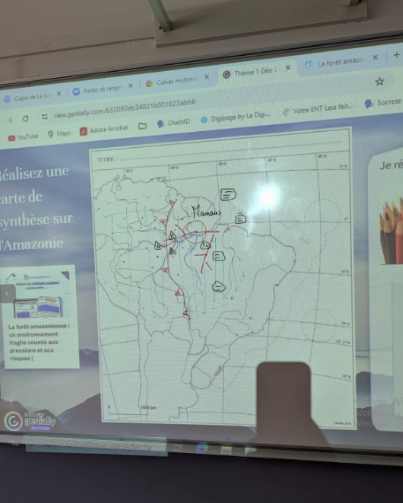

IA au service des métiers créatifs
Design graphique, communication visuelle, image, vidéo, textile — découvrez les outils IA qui transforment les pratiques de vos formations.
🎓 Formations couvertes
💰 Outils & tarifs
| Outil | Tarif | Accès |
|---|---|---|
| Adobe Firefly | Inclus CC (25€/mois) | Photoshop, Illustrator, Express |
| Canva Pro | 15€/mois · Gratuit éducation | canva.com |
| Midjourney | 10€/mois (Basic) | midjourney.com |
| Framer AI | Gratuit / 20€/mois Pro | framer.com |
| CapCut AI | Gratuit (Pro 12€/mois) | capcut.com |
| Runway ML | 15$ crédits/mois | runwayml.com |
| ElevenLabs | Gratuit 10k car./mois | elevenlabs.io |
| Predis.ai | 29$/mois (Free limité) | predis.ai |
Adobe Firefly & IA dans la suite Creative Cloud
| Outil | Fonctionnalité IA | Cas d'usage métier | Niveau |
|---|---|---|---|
| Photoshop | Generative Fill, Generative Expand, Remove Object | Retouche, composition, extension de fond, suppression d'éléments | CAP · Bac Pro |
| Illustrator | Generative Recolor, Text to Vector, Retype | Déclinaison charte, vectorisation auto, typo créative | BMA · STD2A |
| Adobe Express | Magic Write, Text to Image, Remove Background | Posts réseaux, flyers, affiches en quelques clics | Tous niveaux |
| InDesign | Generative Fill dans les blocs image | Maquettes éditoriales, remplissage de gabarits | BTS · DN MADE |
| Firefly Web | Text to Image, Text Effects, Generative Fill | Création libre, exploration créative sans CC installé | Tous niveaux |
Génération d'images professionnelles pour les arts graphiques
| Outil | Point fort | Tarif | Usage idéal |
|---|---|---|---|
| Midjourney | Qualité artistique exceptionnelle, styles cohérents | 10$/mois | Moodboards DA, illustrations, visuels haute qualité |
| Ideogram | Texte dans l'image fiable, typographie intégrée | Gratuit/9$/mois | Affiches avec texte, logos conceptuels, typographie créative |
| Leonardo.ai | Cohérence de personnage, styles fine-tuned | Gratuit 150 tokens/j | Personnages cohérents, BD, concept art, jeu vidéo |
| Adobe Firefly | Légalement sûr, intégré CC | Inclus CC | Assets production, workflow professionnel |
| Flux (Black Forest) | Réalisme photographique, gratuit en ligne | Gratuit (fal.ai) | Photos produits, portraits, ambiances réalistes |
--ar 16:9 (format paysage), --style raw (moins stylisé), --chaos 30 (plus de diversité). Comparez les résultats.--sref URL). Créez une série cohérente pour une marque fictive.
Communication réseaux sociaux & contenus avec l'IA
Créer des sites & interfaces numériques avec l'IA
Framer AI — site en 30 secondes
Principe : décrivez votre site en texte → Framer génère un site complet, hébergé, responsive, avec animations.
- Gratuit jusqu'à 1 site publié
- Idéal : portfolios, sites d'événements, landing pages
- CMS intégré pour les actualités
- Export en code React si besoin
Figma AI — design system & prototypage
Principe : l'IA dans Figma aide à créer des composants, auto-layout, et générer des maquettes de wireframe.
- Plugin Galileo AI : maquette depuis texte
- Auto Layout intelligent
- Génération de contenu fictif (noms, avatars, textes)
- Copilot Figma (bêta 2024) : chat pour modifier
Vidéo & motion design avec l'IA
| Outil | Spécialité | Tarif | Formation cible |
|---|---|---|---|
| CapCut AI | Montage auto, sous-titres, effets sociaux | Gratuit / Pro 12€ | Tous niveaux — réseaux sociaux |
| Runway ML | Gen-3 : texte→vidéo, effets IA avancés | 15$/mois (Basic) | DN MADE Numérique · Mastère DA |
| Adobe Premiere AI | Speech to Text, Auto Reframe, Enhance Speech | Inclus CC | BTS Com · DN MADE · Mastère |
| ElevenLabs | Voix off réaliste multi-langues, clonage vocal | Gratuit 10k car/mois | BTS Com · Bachelor · Mastère |
| Kling AI | Image→vidéo, mouvements fluides | Gratuit limité | DN MADE Numérique · Mastère |
| Pictory | Article/script → vidéo automatique | 23$/mois | BTS Communication |
Édition, publication & identité visuelle avec l'IA
Khroma — palette IA personnalisée
khroma.co apprend vos préférences couleur (vous notez 50 couleurs) puis génère des milliers de palettes sur mesure. Exportez en HEX, RGB, ou directement en palette Adobe.
- Gratuit après calibration
- Palettes 2, 3 ou 4 couleurs
- Prévisualisation sur typographie, poster, photo
- Export direct en Adobe Swatch (.ase)
Fontjoy — association typographique IA
fontjoy.com génère des associations titre/sous-titre/corps de texte harmonieuses. L'IA calcule la "distance visuelle" entre les polices pour créer des contrastes équilibrés.
- Gratuit, toutes Google Fonts
- Verrouiller une police, générer des alternatives
- Régler le contraste souhaité (harmonieux ↔ contrasté)
- Copier les imports CSS directement
Textile, matériaux & écoconception avec l'IA
--tile pour créer des motifs répétables (seamless). Parfait pour les imprimés textile, papiers peints, ou motifs de packaging.Outils de recherche matériaux IA
- Material District (materialdistrict.com) : base de données mondiale de matériaux innovants, filtrable par propriété (recyclé, biosourcé, compostable)
- Sourcemap : traçabilité des chaînes d'approvisionnement textile
- Claude/ChatGPT : recherche et comparaison de matériaux alternatifs écoresponsables
- GoodOnYou : évaluation éthique et environnementale des marques textiles
Adobe Substance 3D Sampler
Créez des matériaux PBR (Physically Based Rendering) depuis une simple photo. Parfait pour simuler des textures réalistes dans des maquettes 3D ou des rendus produits.
- Photographiez un tissu, un papier, un bois
- Substance extrait automatiquement : albedo, roughness, normal map
- Exportez le matériau vers Blender, Cinema 4D, ou un rendu web
- Inclus dans Adobe CC (Plan All Apps)
Direction artistique, stratégie créative & éthique IA
❌ Ce qu'on ne peut PAS faire
- Générer des images "dans le style de [artiste vivant]" sur Firefly (bloqué)
- Utiliser des images IA dans des concours qui l'interdisent explicitement
- Prétendre qu'un visuel IA est une photo réelle dans un contexte publicitaire (Loi Sapin II)
- Vendre des images IA via Midjourney Basic sans mention explicite
⚠️ Zone grise à enseigner
- Les certifications (CAP, BTS) : les référentiels ne précisent pas encore la place de l'IA — vérifiez les consignes d'examen annuellement
- Copyright : en France, une image IA n'est pas protégeable — mais la composition finale avec IA peut l'être si l'humain a créé une œuvre originale
- Midjourney v6 et les styles d'artistes : techniquement possible, éthiquement discutable
✅ Bonnes pratiques professionnelles
- Mentionner "Créé avec assistance IA" dans les dossiers de certification
- Utiliser Firefly pour les projets clients (couverture légale Adobe)
- Garder les prompts et itérations comme preuve du processus créatif
- Former les élèves à évaluer critiquement les sorties IA (Midjourney hallucine les mains, les textes, les logos)
Firefly (Web)
Génération d'images, Generative Fill, Text Effects — accès direct via le navigateur.
→ firefly.adobe.comKhroma — palettes couleur
IA qui apprend vos préférences couleur pour générer des palettes sur mesure.
→ khroma.coFontjoy — typographie
Associations typographiques harmonieuses générées par IA. Toutes Google Fonts.
→ fontjoy.comMidjourney
Génération d'images haute qualité via Discord. v6 pour la qualité maximale.
→ midjourney.comIdeogram 2.0
Spécialiste texte dans l'image — typographie, affiches, logos textuels.
→ ideogram.aiLooka — logo IA
Génération de logos et identités visuelles par IA. Analyse critique en cours de formation.
→ looka.comPredis.ai
Génération automatique de posts réseaux sociaux (visuel + texte + hashtags).
→ predis.aiCanva Magic Studio
Magic Write, Magic Design, Background Remover — IA intégrée dans Canva.
→ canva.comBuffer AI
Planification et génération de contenus pour tous les réseaux sociaux.
→ buffer.comGamma
Présentations, documents et sites web générés par IA. Alternative à PowerPoint.
→ gamma.appFramer AI
Génération de sites web design par IA, personnalisation complète, publication directe.
→ framer.comPerplexity AI
Moteur de recherche IA avec citations. Idéal pour la veille tendances en DA.
→ perplexity.aiClaude (Anthropic)
IA conversationnelle pour brief créatif, storytelling, critique DA, rédaction.
→ claude.aiCompétences CRCN-Édu travaillées
Suivi de votre progression sur les compétences numériques enseignantes — Journée 6